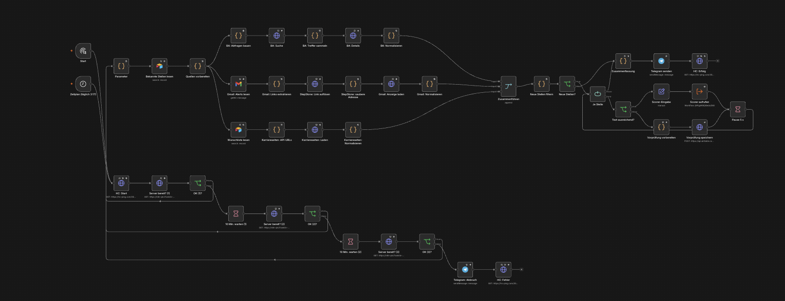

Agentic workflow for my own job search
Several AI agents with clearly separated tasks. They search, check and prepare; I make the decisions.
- My role
- Architecture, criteria, check rules and tests.
- Tools
- n8n, Google Gemini, Claude, Airtable, Gmail, Telegram, OpenStreetMap (Nominatim), Healthchecks.io, UptimeRobot
- Status
- In progress. Five workflows run on a schedule and are monitored from outside. The Writer checks the employer and writes only after my “yes” to the specific job. Technical documentation on GitHub.
Starting point
Suitable jobs are spread across many portals, and the job title says little about what you actually do in the role. I wanted to automate the search as far as possible without giving up control: jobs are scored by scope of tasks, not by title, and no agent applies or sends anything on its own.
Architecture
Each agent has exactly one task. Repetitive steps run in n8n on the free Gemini tier; texts that employers read are written with Claude.
- Employer-Scout: employer wishlistruns on Sundays
- Job-Scout: three sources, commute, duplicatesruns daily
- Scorer: fit 0–100 by scope of tasksruns daily
- Follow-up reminder and error alertTelegram
- Monitoring from outside: Healthchecks.io and UptimeRobotTelegram and e-mail
- Writer: employer check, cover letter and CV from score 75Claude, after my yes
- Writer as a daily tasknext
- ATS check of the CVplanned
- Weekly reviewplanned
One night, step by step
The Job-Scout starts every night at 3:17, outside other people’s working hours and away from the peak load of the AI services.
- Is the server ready? Before the run the workflow asks the server whether it is ready, up to three times, ten minutes apart. If it does not answer, the run stops and I get a Telegram message.
- Three sources. The job search of the German Federal Employment Agency, the job alerts from LinkedIn and StepStone in a dedicated Gmail label, and the career pages of my wishlist, if they run on a known applicant tracking system. Portals are not scraped: the alerts arrive by e-mail anyway.
- Commute first. The Federal Employment Agency supplies coordinates. If the office is too far away and there is no home office option, the job is dropped before it costs an AI call.
- Duplicates and fairness. The same job often arrives through several channels. The workflow compares cleaned links as well as title and employer. Then it takes jobs from each source in turn; otherwise the first search term would fill the daily limit on its own.
- Scoring. One Gemini call per job, at most 25 per night. Eight of these slots are reserved for the Federal Employment Agency, so the e-mail alerts do not fill the limit alone. Without enough ad text, only a record for a manual pre-check is created.
- Short report. In the morning a Telegram message arrives: suitable jobs from 75 with a link, the rest only as numbers. At the end the run reports its success to Healthchecks.io.


In the first real run the Federal Employment Agency returned 958 hits. After the title pre-filter 109 were left, 27 of them too far away. 25 jobs were scored.
Scorer
Jobs are scored by what you do in the role, not by the title. An ad with “Projektmanager” in the title can be a sales job; a “Teamassistenz” can mean mostly process work.
- Part scores from the AI. Gemini reads the ad and returns part scores for tasks, tools, language, location and conditions, plus matches, gaps and open questions as JSON.
- Arithmetic in code. A code node computes the total: it clamps the part scores, caps the penalties and adds a bonus for internal roles. Every score can be traced; the calculation is stored in the record.
- Hard exclusions. People management, “5+ years of professional experience in Germany”, work with customers or on the phone as a core duty, a salary below my minimum, or on-site work outside my radius block the Writer.
- Must requirements with a sense of proportion. If a whole class of knowledge or tools is missing, such as SAP or programming, the score is capped at 70. Another CRM or another task tracker is only a gap, because I already work with that kind of tool.
- Fine-tuned. After the first runs I sharpened the rules: sales as the main task limits the task score, “very good German” costs no points, “start immediately” in the ad is not a minus, and a gap is named only when the ad itself mentions the tool.
Writer
From a score of 75 I decide in Airtable whether I want to apply. Only after my “yes” does Claude assess the employer from online reviews, as “Premium”, “Solid middle” or “Rather not”, with the key facts. For “Rather not” no package is created. Otherwise Claude prepares an application package: a cover letter, a CV tailored to the ad and notes for the application portal. Only evidenced experience is used. The cover letter is mainly e-mail text, because I send most applications by e-mail. Nothing is sent automatically: I read, decide and apply myself.
We built the first package together by hand; it is the style reference. The employer check now works as well. Next, the Writer is to run every day at a fixed time.
Incident on 12 November 2026
Cause. No task runner was available on the n8n server for a Code node. The error workflow also started with a Code node, so no error message was sent.
Impact. The nightly run was stopped after twelve minutes. Four jobs were saved; no summary was sent.
Fix.
- Readiness check before the start. Before each run, the server is checked for readiness up to three times, ten minutes apart.
- Retries. Every Code node is retried up to five times. The failed node was replaced by a node without code.
- Error message without code. The Telegram message is built directly in the Telegram node.
- External monitoring. The start and end of every run are reported to Healthchecks.io. If the success report is missing, an alert is sent by Telegram and e-mail, also for cancelled runs. The server is checked by UptimeRobot every five minutes.
A longer timeout was not used, because it would only have hidden the cause.
Employer-Scout
The first agent builds a list of Berlin employers that fit my profile every Sunday. The AI may suggest; only what passes the checks is saved.
- Suggestion. Gemini names employers for a focus keyword, such as process automation or BPMN, as JSON with temperature 0. Anything unknown stays empty instead of being guessed.
- Duplicates. Compared with the wishlist in Airtable.
- Checks without AI. Does the website exist? Does the career page belong to the company or to a known applicant tracking system? Is the company name on the page? Whatever fails does not go to Airtable, only into the run report.
- Address from the imprint. In my test runs Gemini got the Berlin address wrong for 7 of 22 companies. So the workflow now reads the address from the imprint page by a rule. The AI address is only a marked fallback.
- Distance. Geocoding via OpenStreetMap and straight-line distance in a code node. Hybrid jobs with too long a commute are sorted out.
- Entry and report. New employers go into Airtable with the status “Neu” (new); I set the priority. If more than 30 percent are rejected in a run, the report flags the run, because then the prompt or the keyword is wrong.
Privacy
- Only public job ad texts, search parameters and a profile without contact data go to Gemini, never the CV.
- My home address appears nowhere in the workflow. For the commute a public square nearby is enough.
- CV, contact data and cover letters stay with Claude and in my Google Drive.
- No workflow sends anything to employers.
- Healthchecks.io only gets a sign of life without content; UptimeRobot only checks a public status address of the server.
- The n8n instance is provided by a training provider. That is why I use my own narrowly scoped, replaceable access keys and export the workflows regularly.
Lessons
AI is good at suggesting candidates and reading ads. For facts such as addresses and links, and for arithmetic, a simple rule is more reliable. So the strongest part of the workflow is the checks, not the prompt.
The second lesson came from operation: the free Gemini tier has daily limits per model, and public interfaces change without notice. That is why there is a fallback model with its own quota, a limit per run and monitoring that does not depend on the same server.